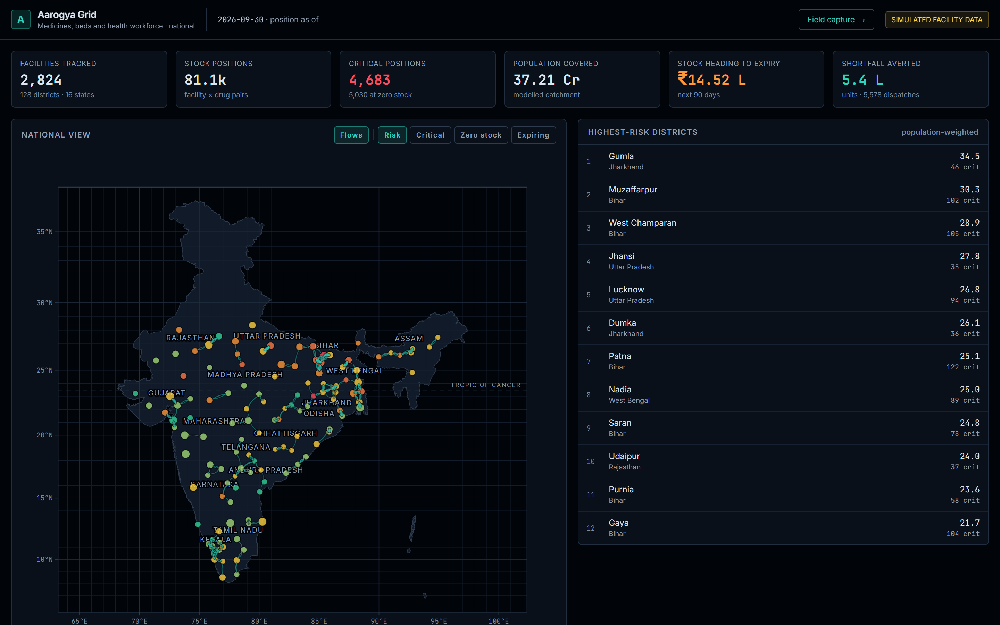
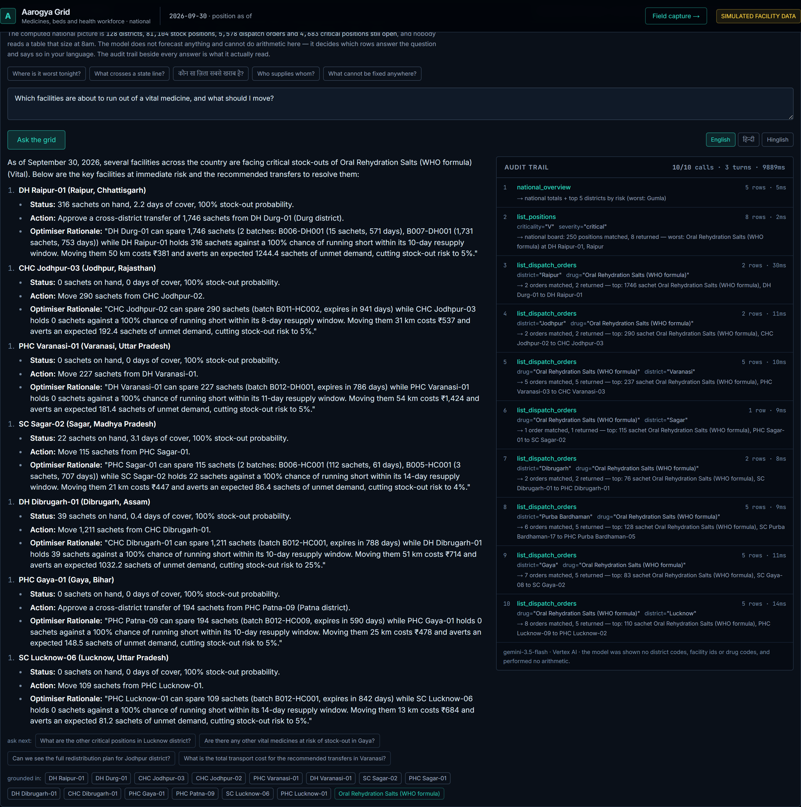
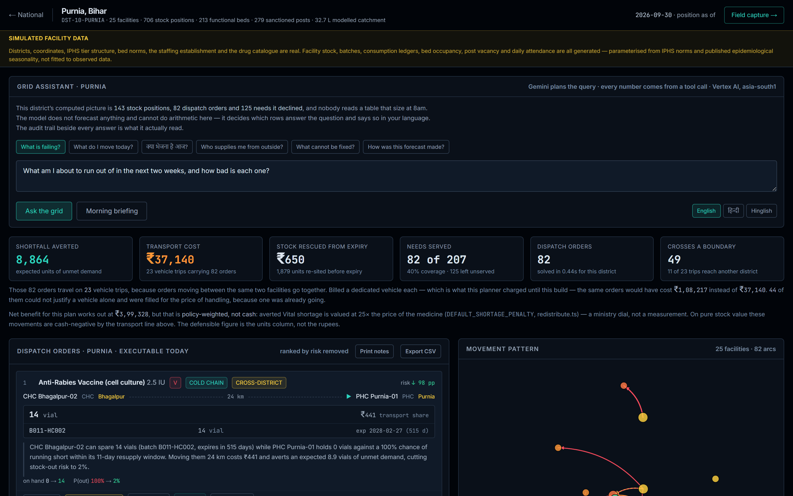

A federated early-warning grid for India's primary health network. Demand is forecast at every facility–drug position — on Google's TimesFM wherever a held-out backtest says it wins — the detector spots an outbreak surge days before a shelf empties, and the planner moves medicine across district lines before it does, without creating a stock-out anywhere else.
They are ninety minutes away, in a facility that will write them off unused in six weeks. Nobody knows either fact.
Both facilities report into a paper register that reaches the district office weeks later, if at all. India's public health supply chain does not primarily fail on procurement volume — it fails on visibility, and on lateral movement: the ability to see a shortage forming and move stock sideways before it becomes a stock-out.



Every recommendation names the specific batches and their expiry dates, oldest first, and the quantity is bounded by what those batches physically hold. A recommendation a storekeeper cannot fill is not a recommendation. This one crosses a district boundary — the clause the brief adds this edition — so it also carries who is allowed to issue it: West Khasi Hills cannot approve it alone, and the console disables Approve until South West Khasi Hills countersigns. This order pays for its own vehicle — ₹1,174 planned, ₹1,174 alone — and that vehicle then carries 3 other orders that ride along for the price of handling.
| Demand class | Positions | TimesFM | Croston | Serves |
|---|---|---|---|---|
| Intermittent | 98,844 | 0.894 | 0.968 | TimesFM |
| Smooth | 1,14,566 | 0.763 | 0.771 | Croston |
| Erratic | 69,163 | 0.711 | 0.701 | Croston |
| Lumpy | 32,699 | 0.807 | 0.845 | Croston |
| And the fit is on corrected history | Bias | Error |
|---|---|---|
| The raw ledger | −3.2% | 3.4% |
| Stock-outs excluded | −0.9% | 2.0% |
By the time a block's anti-malarials run short, the malaria has been there a fortnight. AI.DETECT_ANOMALIES runs over district consumption and OPD attendance — 36,912 series, 32 statements, 0 bytes billed — and a warning is a rule over points, tuned against 126 injected surges and scored on 80 candidate rules.
| Detection of a 2× 14-day surge | 100% |
| Median lead before the first shelf empties | 4.58 days |
| False alarms per district-week | 0.446 |
| Precision | 21% |
The measurement inverted the obvious expectation. Footfall is upstream and nearly blind at district scale: an outbreak doubles one disease, and vector-borne illness is ~9% of a district's OPD, so a 2× surge arrives in total attendance as ×1.09 while the drugs that treat it double. The tuned rule runs on consumption.
Each state fits its own model and publishes a monthly demand multiplier per catalogue item, its standard error, and one vacancy rate per cadre. Pooled by random effects with the between-state variance estimated from the nodes, so a state keeps its own estimate exactly to the extent its data earns it.
| A state joins with 30 days | Scaled MAE |
|---|---|
| No seasonality at all | 0.2675 |
| Its own fit, alone | 0.2637 |
| Shrunk toward the national prior | 0.1687 |
| Its own fit on all 180 days (ceiling) | 0.1657 |
36.0% closer to observed demand than forecasting alone, measured leave-one-state-out — the prior it is offered is pooled from the other thirty-five only.
| National plan | Value |
|---|---|
| Waste averted | + ₹18.9 L |
| One dedicated vehicle per order | − ₹277.0 L |
| Transport cost, consolidated | − ₹125.9 L |
| Net cash position | − ₹107.0 L |
| Shortfall averted | 34,39,003 units |
It breaks even at ₹3.11 per averted unit of unmet demand. Whether a dose of a Vital medicine reaching a patient is worth that is a policy judgement, not an engineering one — so the shortage penalty is an explicit parameter, not something folded into a headline.
| The same 23,070 orders | A vehicle each | Consolidated |
|---|---|---|
| Vehicle trips | 23,070 | 9,421 |
| Crossing a district | 15,930 trips | 6,415 trips |
Real 769 districts at their headquarters towns, with LGD codes · Census 2011 district populations, reconciled to state totals · the NLEM drug catalogue, forms, strengths and VED classes · IPHS tier, bed and staffing norms · an NFHS-5 indicator for every state · the national boundary from DataMeet's composite file.
Simulated Facility-level stock, consumption, batches and expiries · bed occupancy · staff attendance · OPD footfall. Labelled SIMULATED FACILITY DATA in the console header and on the landing page, and itemised in NOTICE.
The early-warning feed already leaves in a schema nobody has to be Indian to read: an area has a code, a named code system, a name and a population; a signal has a hazard class from a fixed list, an observed value, an expected range and a confidence. Every Indian identifier travels in an optional block a consumer can drop, and npm test strips that block and re-validates.